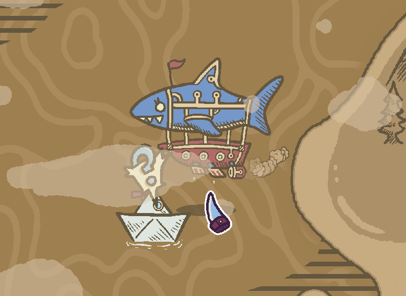
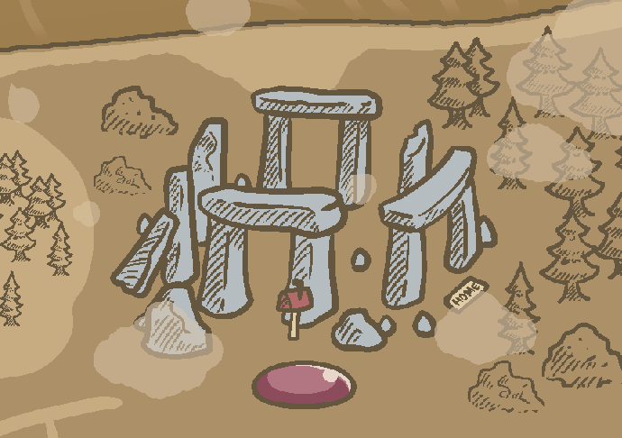
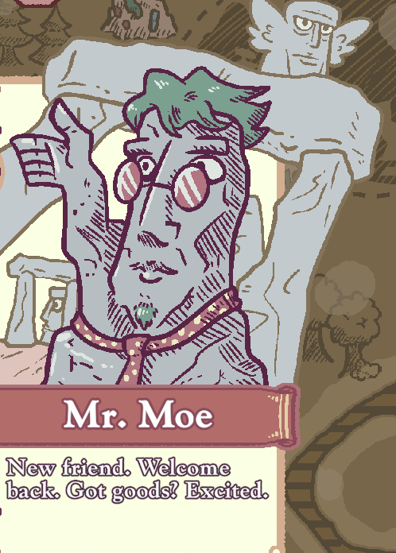
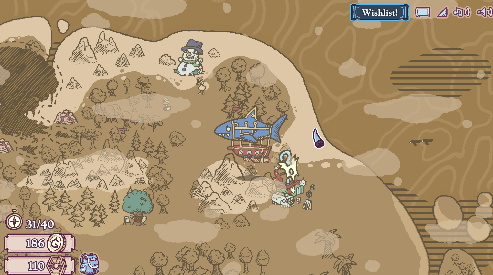
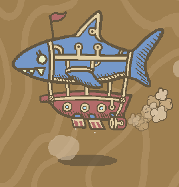
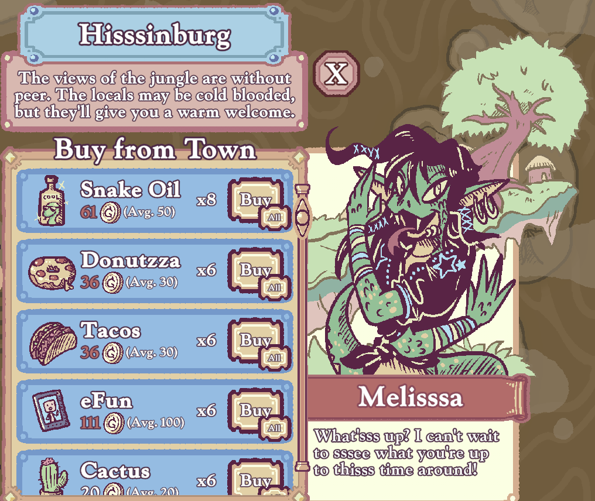

Since trading/markets is a huge part of Townseek, my Kumu network represents trading relationships in the game. I've selected a couple towns where trading occurs, and the network shows some items, prices, and characters of that town's trading center. Colors are prices and shapes are types.
Aspects of the Game
Setting/Map

The map features little landmarks such as this paper ship that the player can interact with and read fun little dialogues.


The world is divided into several themed regions, with unique colors, buildings, and NPCs. For example, the player can distinguish that this is Stonehengeopolis, the town that is stone-themed, based on the buildings and trader.
Graphics/Audio/Media

The game uses simple 2D graphics with soft colors and minimalistic art, which contributes to its relaxing vibe. Soft, cutesy music is playing in the background with additional sound effects during interactions.There are small animated details, such as animals moving and clouds drifting, which really bring the graphics to life. Another cool part of this is that the cursor is actually a shark tooth, which matches the player's character as a shark airship.
Characters

You control one character in this game, which is the pilot in the airship. The player's character isn't deeply developed, but you get to know them based on how NPCs treat you — as a friendly, curious traveler. The focus on the game is not on the character itself, but its interactions with others.

Objects
The map features little landmarks such as this paper ship that the player can interact with and read fun little dialogues.
Challenges
The map features little landmarks such as this paper ship that the player can interact with and read fun little dialogues.